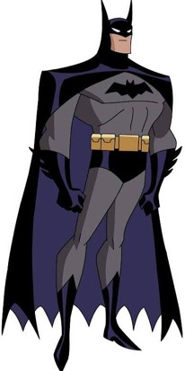
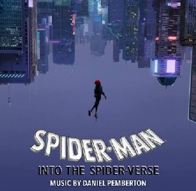

| Voornaam | Achternaam | Address | Postcode | Gemeente | Telefoonnummer |
|---|---|---|---|---|---|
| Edith | Habsburg | Steenstraat 65 | 8655 | Imaginair | +55 555 654 654 47 |
| Isleen | Dawn | Weidelaan 24 | 7070 | / | +55 555 479 569 34 |
| Mandy | Hirsch | Paardenweg 07 | 6567 | Weg | / |
| Robert | Manson | Mechalaan 03 | 4545 | California | +55 555 457 855 03 |
| Emily | Parie | Croissantstraat 55 | 4746 | Parijs | +55 555 547 542 01 |